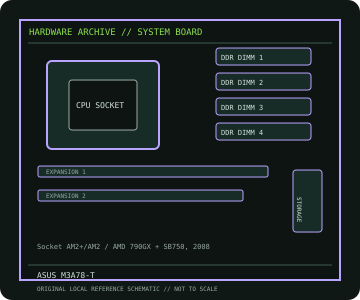

[ INDIVIDUAL COMPONENT // MOTHERBOARDS ]
ASUS M3A78-T
M3A78-T: Socket AM2+/AM2 / AMD 790GX + SB750, 2008; revision-aware Socket motherboard specifications, CPU/BIOS qualification, board size, memory, expansion, storage and I/O.

IDENTIFICATION: ASUS model designation; confirm the board marking and BIOS identifier. Confirm the exact silkscreen, revision and firmware on the physical board; near-name variants can use different BIOS files and connectors.
Specifications
| Catalog subcategory | AMD Socket platforms |
|---|---|
| Exact board / model | M3A78-T — ASUS model designation; confirm the board marking and BIOS identifier |
| Platform and chipset | Socket AM2+/AM2 / AMD 790GX + SB750, 2008; AMD 790GX northbridge with SB750 southbridge; integrated Radeon HD 3300 graphics. |
| CPU and BIOS support | Socket AM2+/AM2; ASUS lists Phenom FX/X4/X3/X2, Athlon 64 X2/64 and Sempron families. CPU model and minimum BIOS are support-list dependent. |
| Memory | Four DDR2 DIMM sockets, dual-channel, up to 16 GB officially specified; verify supported density and speed against CPU and BIOS. |
| Board size / form factor | ATX, 305 × 244 mm. |
| Expansion and storage | Two PCIe 2.0 x16-length slots, two PCIe x1 and two PCI slots; six SATA 3 Gb/s ports, one PATA channel and onboard RAID options. |
| Rear I/O and compatibility | Integrated DVI, HDMI and VGA display outputs, Gigabit Ethernet, USB 2.0, analog/digital audio, PS/2 and legacy ports. Hybrid CrossFire functionality is driver/graphics-combination dependent. For integrated graphics use supported AM2+/AM2 CPU and the board outputs; discrete cards use the PCIe slots. Verify CPU TDP, minimum BIOS and memory configuration in ASUS documentation. |
Compatibility and revision notes
For integrated graphics use supported AM2+/AM2 CPU and the board outputs; discrete cards use the PCIe slots. Verify CPU TDP, minimum BIOS and memory configuration in ASUS documentation.
Before installation, compare the physical board and revision against the manufacturer manual. Check socket condition, CPU power requirements, cooler/chassis clearance, DIMM population order, power connectors and any shared PCIe or SATA lanes. Update firmware only with the exact model’s supported procedure.
Preservation and repair
Record the PCB revision, BIOS identifier, serial/date code, installed CPU and memory, accessories, known faults, repairs and test conditions. Use ESD-safe handling and inspect for socket damage, corrosion, leaking capacitors and loose conductive hardware before power-up.
Sources & further reading
- ASUS M3A78-T CPU supportManufacturer CPU list with processor-specific BIOS qualification.
- ASUS M3A78-T manual/supportManufacturer user manual and board documentation for setup and connectors.
Manufacturer documentation is authoritative for supported CPUs, minimum BIOS, memory qualification and revision-specific wiring. Do not transfer compatibility claims or firmware between similar model names.